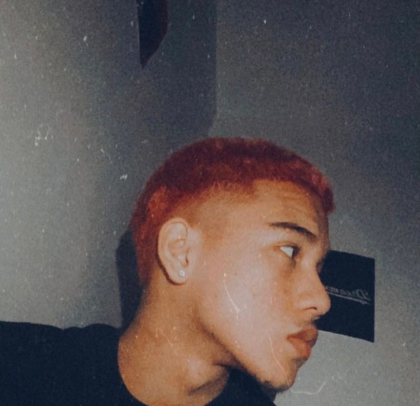

ALAMAT is a 8-member male idol group from the Philippines that sings
in several local languages under Viva Artists Agency.The
group consists of Taneo, Mo, Tomas, R-ji, Valfer, Alas, Gami, and Jao.
ALAMAT debuted on Febuary 14, 2021 with their single "KBYE".

Alamat Members
Mo
Taneo
R-ji

Tomas

Jao

Alas
Gami